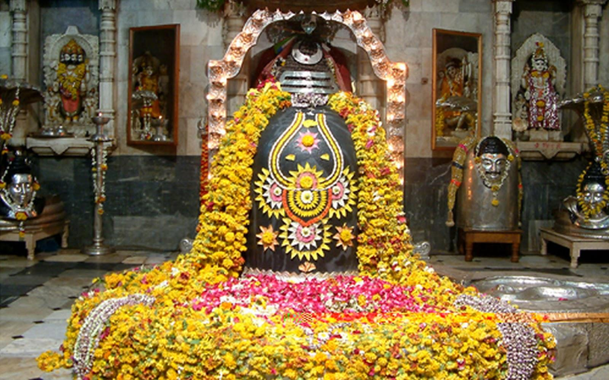
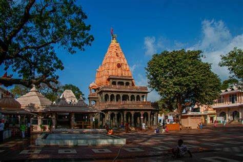
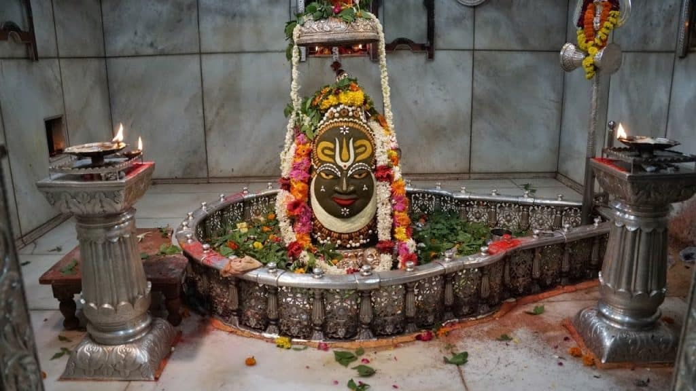

Experience the divine presence of Lord Mahakal in the heart of Ujjain.
Mahakaleshwar is one of the twelve Jyotirlingas, considered the most sacred abodes of Lord Shiva. Its 'Bhasma Aarti' is a unique and spiritually charged ritual.
Ujjain, home to Mahakaleshwar, is an ancient city with rich historical and cultural significance, mentioned in various Hindu scriptures and Puranas.
The temple radiates a powerful spiritual energy that attracts devotees from all over the world, seeking the blessings of Lord Mahakal for peace and prosperity.
Mahakaleshwar Temple is a timeless symbol of devotion, where the divine aura of Lord Shiva permeates every corner, offering solace and spiritual upliftment.